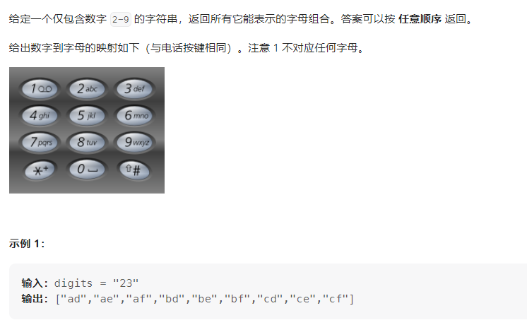

算法之回溯
最近学习了灵神讲的回溯，回溯的核心是边界条件的处理，先要选定一个边界条件，再判断边界条件是否达到从而进行不同的处理。同时回溯中要主要保存当前的现场状态（该状态有时候是被保存在递归栈中，有时候是保存在数组中），特别是在用数组的时候，在回溯时需要删除数组中的元素。
先来看这样一个题目：leetcode17 电话号码的字母组合
https://leetcode.cn/problems/letter-combinations-of-a-phone-number/

对于这样的一个问题，可以使用循环来做，毕竟回溯在某种意义上就是一个多重循环，亦可以使用回溯。在这个问题中，我们使用一个数组path来记录路径上的每个路径上的字母，然后一直找下一个，知道数组的长度等于所给的digits的长度n，相当于深度遍历，从dfs(i)—>dfs(i+1)。那么边界条件就是path数组是否达到了长度n，如果达到了就返回当前数组，如果没达到就枚举下一个数字映射的字母集合。
针对这个问题，提出如下三个问题：
当前操作是什么？ 在这里是枚举path[i]要填入的字母
子问题是什么？ 即构造字符串>=i的部分
下一个子问题是什么？ 即构造字符串中>=i+1的部分
时间复杂度$O(4^n)$，空间复杂度$O(n)$
1 2 3 4 5 6 7 8 9 10 11 12 13 14 15 16 17 18 19 20 21 22 23 24 25 26 27 28 29 30 31 32 33 34 35 var phoneMap map [string ]string = map [string ]string { "2" : "abc" , "3" : "def" , "4" : "ghi" , "5" : "jkl" , "6" : "mno" , "7" : "pqrs" , "8" : "tuv" , "9" : "wxyz" , } var combinations []string func letterCombinations (digits string ) []string if len (digits) == 0 { return []string {} } combinations = []string {} backtrack(digits, 0 , "" ) return combinations } func backtrack (digits string , index int , combination string ) if index == len (digits) { combinations = append (combinations, combination) } else { digit := string (digits[index]) letters := phoneMap[digit] lettersCount := len (letters) for i := 0 ; i < lettersCount; i++ { backtrack(digits, index + 1 , combination + string (letters[i])) } } }
子集型回溯
求一个集合的子集，每个元素都可以选或者不选
第78题 子集
https://leetcode.cn/problems/subsets/
这是一个典型的回溯问题，对于nums数组中的每一个元素，可以选中也可以不选中，先处理选中情景，再处理未选中的情景，在处理未选中这一情景时需要进行回溯。边界条件：递归所带参数等于数组长度（即每个元素都考察了一遍，有的选中有的不选中），回溯三问：
当前操作？ 当前这个数选中/不选中
子问题？从下标大于等于i的数字中构造子集
下一个子问题？从下标大于等于i+1的数字中构造子集
1 2 3 4 5 6 7 8 9 10 11 12 13 14 15 16 17 18 19 20 func subsets (nums []int ) (res [][]int ) set := []int {} var dfs func (int ) dfs = func (cur int ) if len (nums) == cur{ res = append (res, append ([]int {}, set...)) return } set = append (set, nums[cur]) dfs(cur+1 ) set = set[:len (set)-1 ] dfs(cur+1 ) } dfs(0 ) return }
时间复杂度：$O(n*2^n)$,一共有$2^n$个状态，但每个状态最后会拷贝到结果中，故乘n;空间复杂度：$O(n)$
第131题 分割回文串
https://leetcode.cn/problems/palindrome-partitioning/
同样按照回溯的方法来处理，首先看边界条件，即分割完毕，设从i开始分割，i到s的末尾，即i==len(s)，就将分割的字串数组加入答案中；否则就继续分割。接着看回溯三问：
当前操作？判断从i往后的字串是否为回文
子问题？ 下一个i即i = i+len(回文串)往后的字串是否为回文
子问题的子问题？ 下下个i往后的字串是否为回文
在这题中，提前用dp的方法维护了一个二维数组，记录了f[i] [j]表示下标从i到j是否为回文串，用以在$O(1)$的时间做出是否为回文串的判断
1 2 3 4 5 6 7 8 9 10 11 12 13 14 15 16 17 18 19 20 21 22 23 24 25 26 27 28 29 30 31 32 33 34 35 36 37 func partition (s string ) (ret [][]string ) n := len (s) f := make ([][]bool , n) for i,_ := range f{ f[i] = make ([]bool , n) for j:=range f[i]{ f[i][j] = true } } for i:=n-1 ; i>=0 ; i--{ for j:=i+1 ; j<n; j++{ f[i][j] = s[i] == s[j] && f[i+1 ][j-1 ] } } splits := []string {} var dfs func (int ) dfs = func (i int ) if i == n{ ret = append (ret, append ([]string {}, splits...)) return } for j := i; j<n; j++{ if f[i][j]{ splits = append (splits, s[i:j+1 ]) dfs(j+1 ) splits = splits[:len (splits)-1 ] } } } dfs(0 ) return }
时间复杂度：$O(n*2^n)$,一共有$2^n$个状态，但每个状态最后会拷贝到结果中，故乘n;空间复杂度：$O(n^2)$
组合型回溯
第77题 组合
https://leetcode.cn/problems/combinations/description/
求解不同数字的组合，先找边界条件，也就是退出条件；然后分析这一步的操作以及子问题的操作即可。
至此，其实我们已经得到了一个时间复杂度为$O((^n _k)×k)$ 的组合枚举，由于每次记录答案的复杂度为O(k)
时间复杂度$O((^n _k)×k)$ 空间复杂度$O(n)$
1 2 3 4 5 6 7 8 9 10 11 12 13 14 15 16 17 18 19 20 21 func combine (n int , k int ) (res [][]int ) var dfs func (int ) //传入k 和 n 两个参数， 用于判断是否停止，以及下一个枚举的数字 temp := []int {} dfs = func (nowNum int ) if len (temp) == k { res = append (res, append ([]int {}, temp...)) return } if nowNum > n || len (temp) > k{ return }else { temp = append (temp, nowNum) dfs(nowNum+1 ) temp = temp[:len (temp)-1 ] dfs(nowNum+1 ) } } dfs(1 ) return }
第216题 组合Ⅲ
https://leetcode.cn/problems/combination-sum-iii/description/
和上一题同样，先判断边界条件，然后分选择该数字和不选中该数字两种情况来处理。
时间复杂度$O((^n _k)×k)$ 空间复杂度$O(n)$
1 2 3 4 5 6 7 8 9 10 11 12 13 14 15 16 17 18 19 20 21 22 23 24 25 26 27 28 29 30 func combinationSum3 (k int , n int ) (res [][]int ) min, max := 0 , 0 for i := 0 ; i < k; i++{ min = min + i + 1 max = max + 9 - i } if n > max || n < min{ return } temp := []int {} var dfs func (int , int ) dfs = func (nowValue int , sum int ) if sum == n && len (temp) == k { res = append (res, append ([]int {}, temp...)) return } if sum > n || nowValue > 9 || len (temp) > k{ return } temp = append (temp, nowValue) dfs(nowValue+1 , sum+nowValue) temp = temp[:len (temp)-1 ] dfs(nowValue+1 , sum) } dfs(1 , 0 ) return }
第22题 括号生成
https://leetcode.cn/problems/generate-parentheses/
回溯的方法：
这一题的思考就比前面的组合要复杂一些，首先还是边界条件，当序列合法时，肯定是序列长度等于2n时加入结果中并返回；由于这一题在剪枝方面不太好判断字串是否合法，故在加入括号的时候需令其合法，如下
时间复杂度与空间复杂度都是为$O(4^n/根号(n))$
1 2 3 4 5 6 7 8 9 10 11 12 13 14 15 16 17 18 19 20 21 22 23 24 25 func generateParenthesis (n int ) (res []string ) temp := []byte {} var dfs func (int , int ) dfs = func (leftCount int , rightCount int ) if len (temp) == 2 *n{ res = append (res, string (append ([]byte {}, temp...))) return } if leftCount < n { temp = append (temp, '(' ) dfs(leftCount+1 , rightCount) temp = temp[:len (temp)-1 ] } if rightCount < leftCount { temp = append (temp, ')' ) dfs(leftCount, rightCount+1 ) temp = temp[:len (temp)-1 ] } } dfs(0 , 0 ) return }
下面是一种另外的方法，按括号的长度进行递归的方法，时间复杂度与空间复杂度都是为$O(4^n/根号(n))$
1 2 3 4 5 6 7 8 9 10 11 12 13 14 15 16 17 18 19 20 21 22 23 24 25 26 27 func generateParenthesis (n int ) []string return Dp1(n)[n] } func Dp1 (n int ) map [int ][]string if n==0 { return map [int ][]string {0 :{"" }} } if n==1 { return map [int ][]string {0 :{"" },1 :{"()" }} } lastMap := Dp1(n-1 ) res := []string {} for i := 0 ; i < n; i++ { inners := lastMap[i] outers := lastMap[n-i-1 ] for _, inner := range (inners){ for _, outer := range (outers){ res = append (res, "(" +inner+")" +outer) } } } lastMap[n] = res return lastMap }
排列型回溯
先推荐一下灵神的视频
https://www.bilibili.com/video/BV1mY411D7f6/?spm_id_from=333.788&vd_source=9ac67fc51991e69b7ff04375142fa239
第46题 全排列
https://leetcode.cn/problems/permutations/
这一题其实不难，按照回溯的套路来做即可，边界条件加回溯三问，更重要的是时间复杂度的分析。
1 2 3 4 5 6 7 8 9 10 11 12 13 14 15 16 17 18 19 20 21 22 23 24 25 func permute (nums []int ) [][]int res := [][]int {} visited := map [int ]bool {} var dfs func (path []int ) dfs = func (path []int ) if len (path) == len (nums) { res = append (res, append ([]int {}, path...)) return } for _, n := range nums { if visited[n] { continue } path = append (path, n) visited[n] = true dfs(path) path = path[:len (path)-1 ] visited[n] = false } } dfs([]int {}) return res }
首先给出时间复杂度为$O(n*n!)$ 空间复杂度$O(n)$
（leetcode官方题解的说明）
第51题 N皇后
https://leetcode.cn/problems/n-queens/
这一题如果不考虑斜线的问题的话，其本质和前一题全排列是一样的，相当于是n个数的全排列，以n = 4 为例，满足要求的排列为[1,3,0,2]与 [2,0,3,1]，默认第i个数字就放在第i行。故可以先按全排列的思路来写，并在排列过程中判断斜线上的皇后是否可以放置。
判读是否在同一斜线上的条件：
右斜线上都有 r+c 相等
左斜线上都有 r-c 相等
代码如下：
1 2 3 4 5 6 7 8 9 10 11 12 13 14 15 16 17 18 19 20 21 22 23 24 25 26 27 28 29 30 31 32 33 34 35 36 37 38 39 40 41 42 43 44 45 46 47 48 49 50 func solveNQueens (n int ) [][]string res := [][]string {} col := make ([]int , n) visited := map [int ]bool {} for i := 0 ; i < n; i++{ visited[i] = false } var valid func (int , int ) bool //判断斜线值是否合法 valid = func (r int , c int ) bool for preR := 0 ; preR < r; preR++{ preC := col[preR] if preR + preC == r + c || preR - preC == r - c{ return false } } return true } var dfs func (int ) //递归函数 dfs = func (r int ) if r == n { temp := []string {} for _, v := range col{ temp1 := []byte {} for j := 0 ; j < v; j++{ temp1 = append (temp1, '.' ) } temp1 = append (temp1, 'Q' ) for j := v+1 ; j<n; j++{ temp1 = append (temp1, '.' ) } temp = append (temp, string (append ([]byte {}, temp1...))) } res = append (res, append ([]string {},temp... )) } for i, v := range visited{ if !v && valid(r, i){ col[r] = i visited[i] = true dfs(r+1 ) visited[i] = false } } } dfs(0 ) return res }
时间复杂度和全排列基本一致，但递归到最终的次数没那么多，并且成功时需花费n方时间构造一个二维的的解，故时间复杂度的上限为$O(n^2*n!)$,空间复杂度为$O(n^2)$
总结
本文归纳了回溯的三种类型，处理回溯类问题时，递归的函数体做两部分：
首先是达到了边界条件后怎么处理，通常这里会产生解
其次是处理主体，在这部分要思考回溯三问：当前怎么处理，子问题是什么，后续的子问题是什么。依此写出操作步骤，然后就是看看是选择剪枝（可以提前返回的条件，例如组合问题）还是限定条件处理，使后续步骤都是合法的（例如全排列、N皇后问题）
回溯需需要注意的是要回溯数组或者map(哈希表)这种记录路径或者元素状态的结构的状态，也就是说在回到当时的现场，有些变量状态会自动回溯，但有的结构需要手动处理。
如果您喜欢此博客或发现它对您有用，则欢迎对此发表评论。 也欢迎您共享此博客，以便更多人可以参与。 如果博客中使用的图像侵犯了您的版权，请与作者联系以将其删除。 谢谢 ！